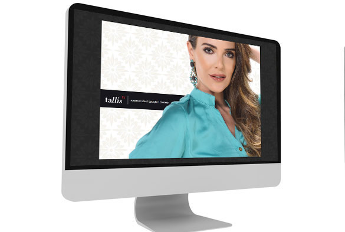
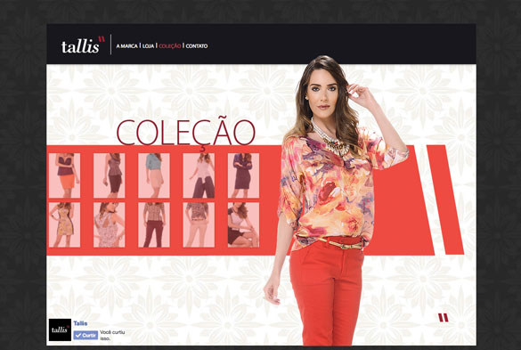

- 

- 
Site institucional com e-Commerce (loja virtual) criado pela Editorar para a marca Tallis, no intuito de divulgar e facilitar a compra das peças femininas para o público-alvo. Além de apresentar as últimas novidades da coleção atual e mais informações sobre a marca, o site disponibiliza uma loja online com todas as peças (blusa, calça, camisa, casaco, regata etc.) da Tallis para aquisição, com ferramentas simples e que facilitam a navegação pelas abas interativas.
- Tipo: Tecnologia
- Cliente: Loja Tallis
- Formato: web site
- Execução: 20 Dias